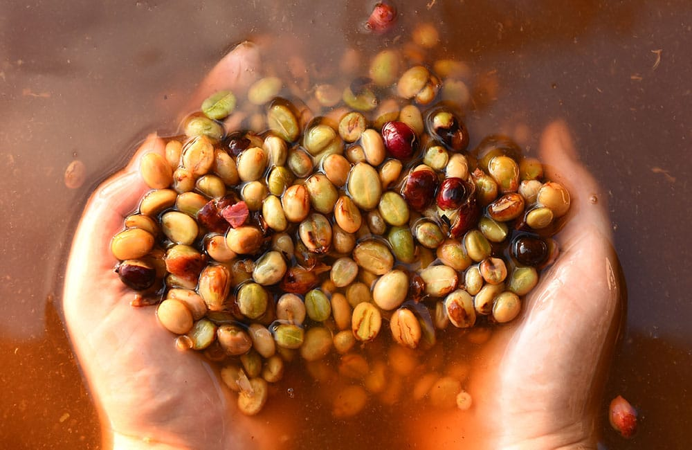

Bienvenido a tranqui
Las ultimas noticias sobre café

Fermentación anaerobica
La fermentación anaeróbica busca realzar los sabores y ofrecer perfiles únicos del mismo café, charlamos sobre cuatro metodos de fermentación.
Tipos de tueste de café, lo que debes saber!
El proceso de tueste consiste en la transformación de café verde a café tostado mediante el aumento de temperaturas, a través de aire caliente.
Fermentación anaerobica
La fermentación anaeróbica busca realzar los sabores y ofrecer perfiles únicos del mismo café, charlamos sobre cuatro metodos de fermentación.